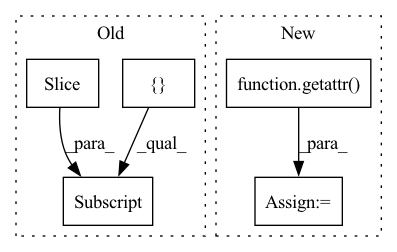

Pattern ID :20936
Before Change
new_length = len(item_list_index)
new_data = self.dataset.inter_feat[target_index]
new_dict = {
self.item_list_field: torch.zeros((new_length, self.max_item_list_len), dtype=torch.int64),
self.time_list_field: torch.zeros((new_length, self.max_item_list_len)),
self.item_list_length_field: torch.tensor(item_list_length),
}
if self.position_field:
new_dict[self.position_field] = torch.arange(self.max_item_list_len).repeat(new_length).view(new_length, -1)
iid_value = self.dataset.inter_feat[self.iid_field]
time_value = self.dataset.inter_feat[self.time_field]
for i, (index, length) in enumerate(zip(item_list_index, item_list_length)):
new_dict[self.item_list_field][i][:length] = iid_value[index]
new_dict[self.time_list_field][i][:length] = time_value[index]
new_data.update(Interaction(new_dict))
return new_dataAfter Change
for field in self.dataset.inter_feat:
if field != self.uid_field:
list_field = getattr( self, f"{field}_list_field")
list_len = self.dataset.field2seqlen[list_field]
shape = (new_length, list_len) if isinstance(list_len, int) else (new_length, ) + list_len
list_ftype = self.dataset.field2type[list_field]
dtype = torch.int64 if list_ftype in [FeatureType.TOKEN, FeatureType.TOKEN_SEQ] else torch.float64
new_dict[list_field] = torch.zeros(shape, dtype=dtype)
value = self.dataset.inter_feat[field]
for i, (index, length) in enumerate(zip(item_list_index, item_list_length)):In pattern: SUPERPATTERN
Frequency: 3
Non-data size: 5
Instances Fragment ID: 67390228
Project Name: rucaibox/recbole
Commit Name: ff2c1876a9a57351382828ca1246646ee01aff42
Time: 2020-12-06
Author: 297086016@qq.com
File Name: recbole/data/dataloader/sequential_dataloader.py
M Class Name: SequentialDataLoader
N Class Name: SequentialDataLoader
M Method Name: augmentation(4)
N Method Name: augmentation(5)
M Parent Class: AbstractDataLoader
N Parent Class: AbstractDataLoader
M File Name: recbole/data/dataloader/sequential_dataloader.py
N File Name: recbole/data/dataloader/sequential_dataloader.py
M Start Line: 114
M End Line: 140
N Start Line: 126
N End Line: 145
Before Change
start_index = max(num_samples + batch_size - self._window_size, 0)
// Using `self.predictions =` will cause Pyre errors.
getattr(self, PREDICTIONS)[0] = torch.cat(
[
cast(torch.Tensor, getattr(self, PREDICTIONS)[0])[:, start_index:],
predictionscast(torch.Tensor, getattr(self, LABELS)[0])[:, start_index:] , labels],
dim=-1,
)
getattr(self, WEIGHTS)[0] = torch.cat(After Change
predictions = predictions.double()
labels = labels.double()
weights = weights.double()
state = getattr( self, self._fused_name)
num_samples = state.size(-1)
batch_size = predictions.size(-1)
start_index = max(num_samples + batch_size - self._window_size, 0)
Fragment ID: 67390236
Project Name: facebookresearch/torchrec
Commit Name: df576fab294f27a11da2cc337c951b35210db8b4
Time: 2023-01-13
Author: renganxu@meta.com
File Name: torchrec/metrics/auc.py
M Class Name: AUCMetricComputation
N Class Name: AUCMetricComputation
M Method Name: update(1)
N Method Name: update(1)
M Parent Class: RecMetricComputation
N Parent Class: RecMetricComputation
M File Name: torchrec/metrics/auc.py
N File Name: torchrec/metrics/auc.py
M Start Line: 116
M End Line: 135
N Start Line: 104
N End Line: 114
Before Change
start_index = max(num_samples + batch_size - self._window_size, 0)
// Using `self.predictions =` will cause Pyre errors.
getattr(self, PREDICTIONS)[0] = torch.cat(
[
cast(torch.Tensor, getattr(self, PREDICTIONS)[0])[:, start_index:],
predictionscast(torch.Tensor, getattr(self, LABELS)[0])[:, start_index:] , labels],
dim=-1,
)
getattr(self, WEIGHTS)[0] = torch.cat(After Change
predictions = predictions.double()
labels = labels.double()
weights = weights.double()
state = getattr( self, self._fused_name)
num_samples = state.size(-1)
batch_size = predictions.size(-1)
start_index = max(num_samples + batch_size - self._window_size, 0)
Fragment ID: 67390234
Project Name: facebookresearch/torchrec
Commit Name: 50c861a4debb6d0d8bd55ddb27452e89f2d19d51
Time: 2022-12-03
Author: renganxu@meta.com
File Name: torchrec/metrics/auc.py
M Class Name: AUCMetricComputation
N Class Name: AUCMetricComputation
M Method Name: update(1)
N Method Name: update(1)
M Parent Class: RecMetricComputation
N Parent Class: RecMetricComputation
M File Name: torchrec/metrics/auc.py
N File Name: torchrec/metrics/auc.py
M Start Line: 116
M End Line: 135
N Start Line: 104
N End Line: 114